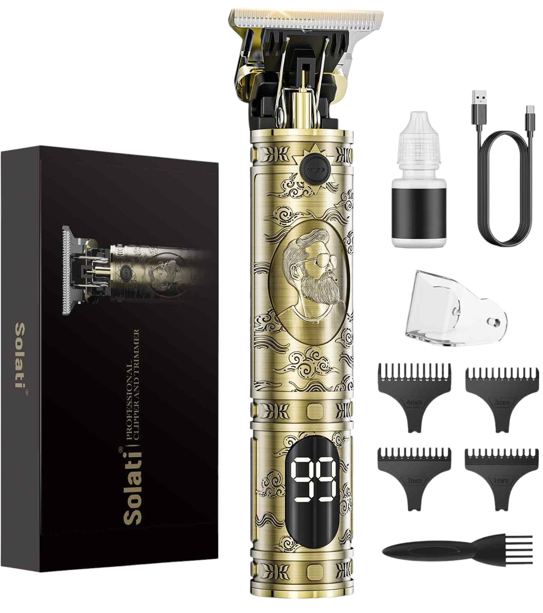
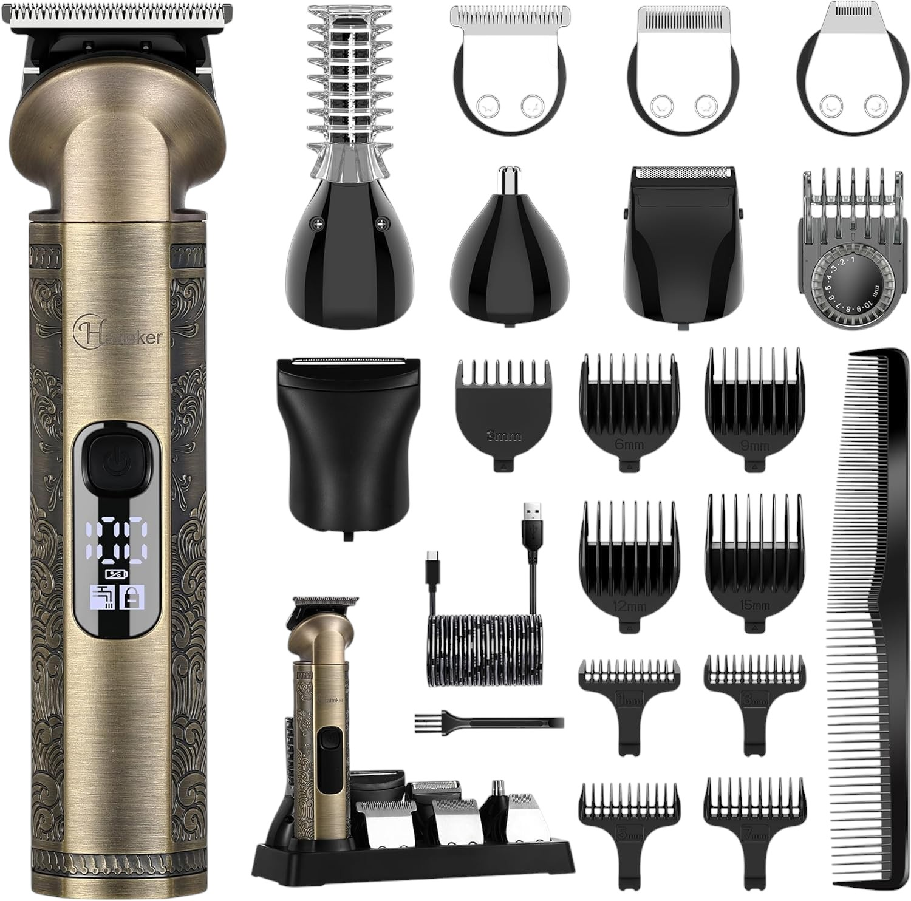

Solati Aparador Masculino
Aparador de corpo masculino com lâmina de cerâmica. Ideal para zonas sensíveis, resistente à água e com base de carregamento USB.
Ver na AmazonUma seleção pensada para quem quer cortar cabelo e barba com melhor controlo, seja em casa ou num contexto profissional.

Aparador de corpo masculino com lâmina de cerâmica. Ideal para zonas sensíveis, resistente à água e com base de carregamento USB.
Ver na Amazon
Máquina de cortar cabelo e barba multifunções com visor LED, lâminas em aço inox e carregamento USB. Inclui vários acessórios e cabeçotes.
Ver na Amazon
Kit multifunções com aparador de cabelo, barba e nariz. Bateria de longa duração e acessórios para todos os estilos.
Ver na Amazon
Máquina de cortar cabelo profissional preferida por barbeiros. Robusta, precisa e potente com alavanca ajustável e 4 pentes de corte incluídos.
Ver na Amazon